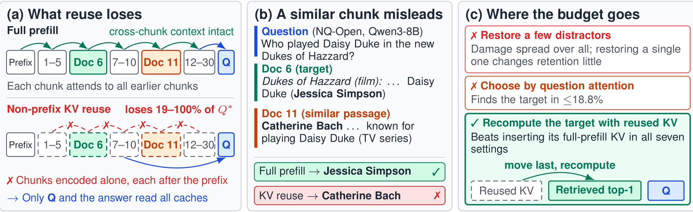
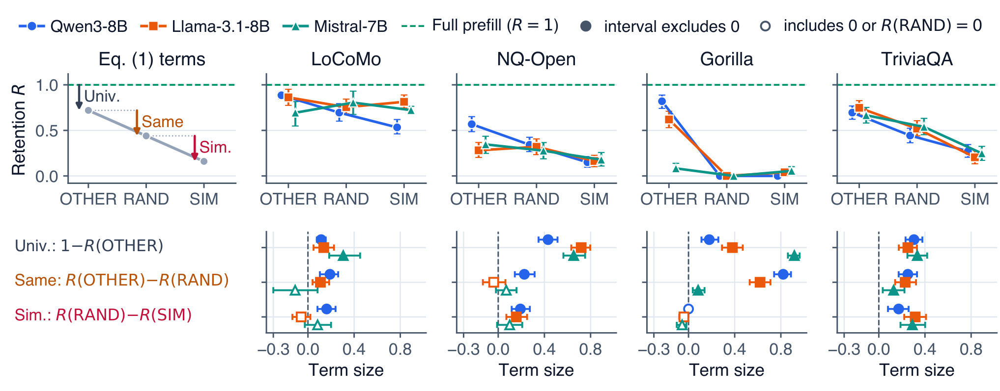
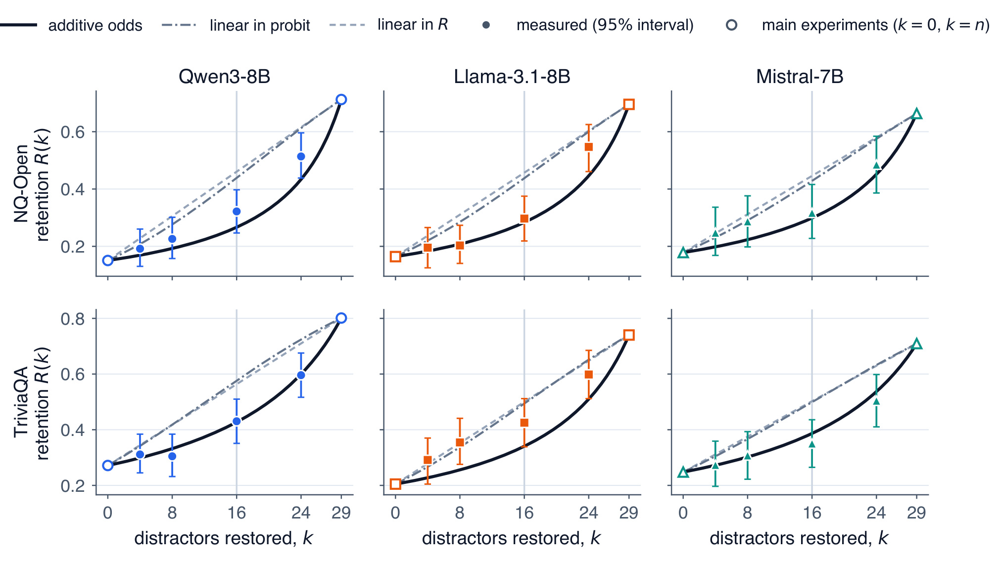
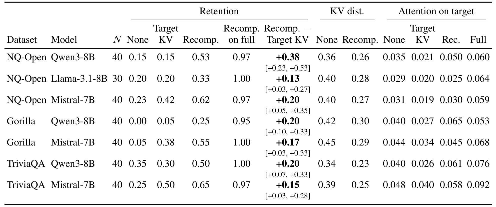
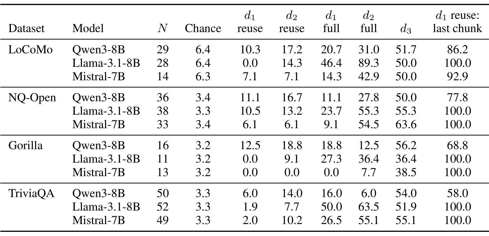
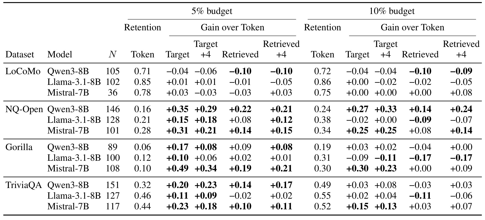
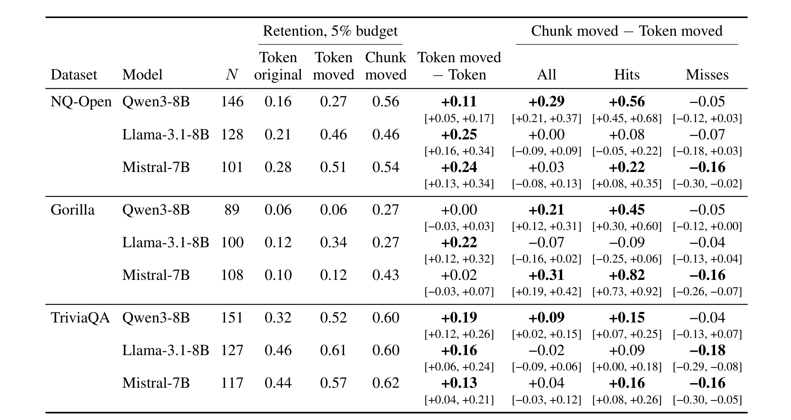
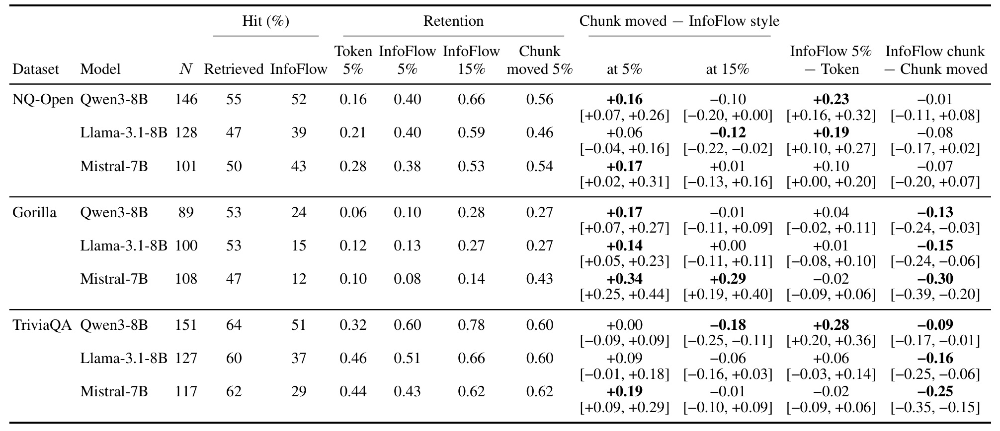
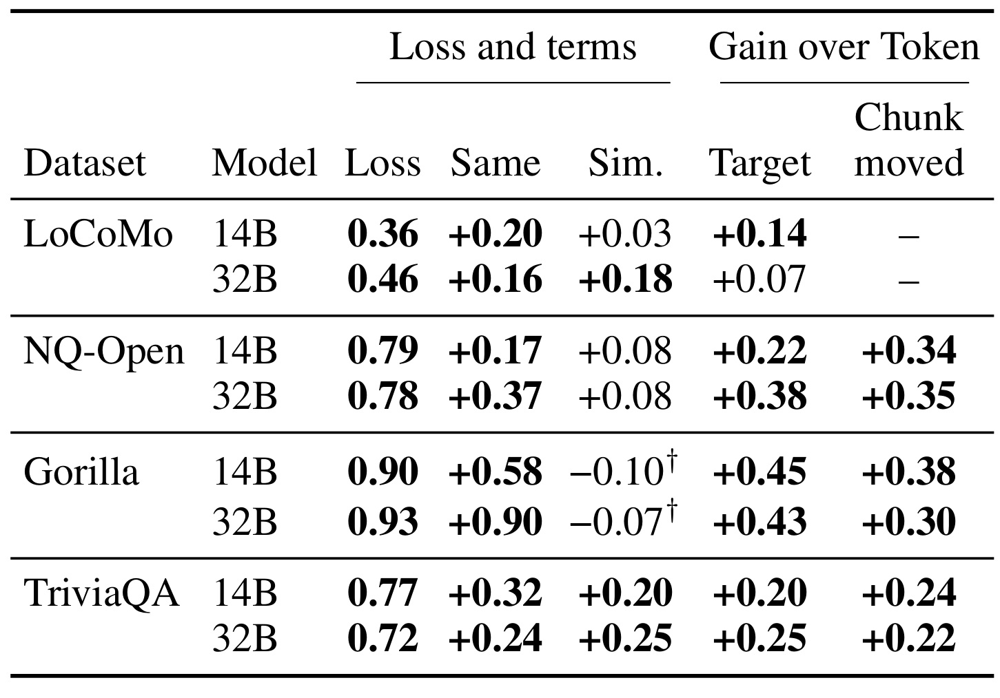
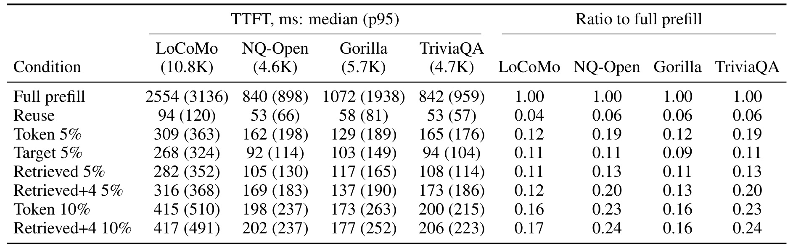

Where Should a KV-Cache Repair Budget Go? / 非前缀 KV 缓存复用的修复预算该给谁
- 作者：Yuxing Peng、Zhiqing Tang、Weijia Jia。一作来自北京师范大学，合作机构包括北师香港浸会大学。
- 来源：arXiv 预印本，v1 提交于 2026 年 11 月 4 日 12:02:58 UTC（北京时间当日 20:02:58）。本轮查阅版本为 v1。
- 代码：本轮未核验到独立作者代码仓库。论文原文
把每份文档的键和值缓存起来，听起来像在检索增强生成里省掉重复阅读。然而在因果注意力里，块中一个词的中间表示会随它前面已经出现的证据变化。作者把这项依赖拆成可干预的实验，并比较少量在线计算交给真实证据、检索器估计的证据，或按模型注意力选出的零散位置，各自能恢复多少答案。
非前缀 KV 缓存复用把检索块各自编码再拼接，块在编码时看不到前面的其他块。有限修复预算应该花在哪里，需要区分真正包含答案的目标块和相似干扰块各自造成的复用损失。
1. 背景和问题
1.1 可重用的文档与依赖上下文的表示
线上检索增强生成通常先根据请求取若干段文本或工具说明，再将它们和问题一起交给模型。同一段百科文章、过往对话或者 API 文档可能反复被召回，却经常出现在不同请求的不同位置。常规前缀缓存适用于开头完全一致的序列。当前面的文档换了一篇，或者相同文档换了次序，后面几块即使字面内容相同，也不能直接按前缀命中。原因是 Transformer 的键和值来自每一层的中间表示，表示已经吸收了可见的前文。全量预填充让文档按真实次序互相作用，代价是查询阶段需要再处理整段输入。
非前缀复用降低的正是这部分重读成本。它可以在离线阶段对常见文档分别编码，线上只读缓存并拼接。位置校正让键的旋转位置和最终拼接的序号对齐，对由相对位置引起的错配有所帮助。然而位置变换没有执行前向计算，也无法让第二篇文档的词重新读取第一篇。对于共有指令之后的第一块，模型实际所见前缀没有变化，因此在论文所设编码方式下，它的缓存可与整段预填充相同。后续文档则越可能在独立编码时缺失它本可读取的前文。最后的问题仍能读取拼接后的所有缓存，却是在这些已经形成的表示上查询。
困难之处在于，无法只看一段缓存的距离就预测答案是否会错。若候选是彼此无关的散文，错误可能主要来自编码图变化。若候选是相同检索器召回的近邻，它们往往共享实体、时期、功能名称和句式。模型此时面对多个看似合理的候选答案，可能读到了同一角色的不同演员，或者拿到作用类似、参数却不同的工具。类似度正是检索策略引入的，不能用均匀采样噪声替代。一个没有表现出明显干扰的拼接实验，换成高质量检索器常见的难负样本，可能得到完全不同的结论。

图中的左栏把同一组文档分别放在整段预填充与独立块复用下。上半部分的箭头说明后块能在自己形成表示时读前块。下半部分保留问题到所有缓存的读取路径，但用叉号指出这些跨块编码连接已经丢失。中栏是一个真实的 NQ-Open 错答，Qwen3-8B 看到三十段文档，其中第六段给出新版电影里的演员，第十一段提到旧电视剧的演员。问题要求新版电影，完整预填充输出 Jessica Simpson，复用输出 Catherine Bach。后一名字有来源，却来自错误的作品版本。单凭回答包含文档里的名字，无法区分这两种输出。右栏把后续要检验的三种做法放在一起：少量恢复干扰块、按问题注意力寻找证据、将检索器选出的块移到问题前并重算。它是同一原图的三联概览，其中的数字来自不同实验条件。左侧百分比限定在完整预填充答对且无上下文答错的题目，右侧七个兼容性对照用的是从三个任务中另取的条件题组，两处样本口径不能混用。对已有召回系统，最直接的警示是保留候选文本与来源身份，否则在日志中只看到最终文本和缓存命中率，难以复盘到底选错文档、使用错证据，还是拼接时改变了阅读方式。这个案例还说明了顺序的作用。错误块处在证据之后，原本有机会在形成自己的表示时参照正确文档。独立编码时这一路连接被切断，最后问题即使同时看见两块，也只能在已经产生的表示中做判断。若把新旧版本条目各保留一条并置换次序，就能进一步检查模型究竟依赖版本词、段落位置还是它们的交互。
1.2 为什么将预算分成块和词两种粒度
修复意味着线上重算部分输入的表示，使它们能够读取已经拼接的前文。计算预算相同的条件下，可以挑若干离散词，也可以集中覆盖一个完整段落。离散挑词的优势是同样数量能覆盖多个文档，适合证据分散和每块过长的情况。集中重算的优势是选对目标后可以把整段有效证据放回真实语境。两条路线都依赖先验：前者需要一个排序准则说明哪些位置重要，后者需要一个信号说明哪块值得整段更新。注意力、隐藏状态差异和文档检索相似度量到的是不同对象，错误的代理可能在预算固定时比计算量本身更决定结果。
还要区分两个实验操作。拿整段预填充产生的状态，直接替换拼接缓存中的某块，是诊断性干预。它回答如果只给某块更完整的表示，答案会怎样，实际要先算整段，因此不是线上省钱方案。真正的局部重算读取的是当前拼接后的旧缓存，再在这套前文上产生新块的键和值。即使这份新状态从数值上仍远离整段预填充，它与同一请求里的其他状态可能更一致。把两种操作混为一谈会把研究的关键问题丢掉：模型读到的是整个混合上下文，某块在另一个完整上下文中计算得更精细，不等于把它搬回来就能更好工作。
作者还刻意把答案本来就会背的题和必须读输入的题分开。若模型只凭参数记忆就能作答，即使缓存破坏了文档关联，总准确率的变化也可能不明显。反过来，一道完整预填充都做不对的题，也难用来刻画缓存有无保留原先可用的证据。将这些题区分后，论文实际追问的是：对于完整输入确实能带来正确答案的题，复用还留住多少能力。这个问题适合定位损失机制，不能代替流量上的整体正确率、召回质量或请求成本测量。对工具系统同样如此，知道正确工具是否在文档内和知道模型是否选对，属于两个不同的环节。
样本的证据结构决定了研究能说多远。论文把目标设成唯一包含答案的块，使干扰项可以保持固定位置关系而被替换。网页代理可能要把时效说明、商品规格和资格约束合在一起才能决策，用户记忆也可能由不同会话共同建立。此时，目标不再天然是一块。论文包含 LoCoMo 的单会话题，已经看到整块重算的优势没有稳定出现。这个反例在阅读其他较强的开放域结果时尤其重要，它说明段落长度、命中概率、证据分布和模型自己的读取习惯必须分别量化。
2. 方法
2.1 干扰源设计和条件保留率
作者固定目标证据及它在提示词的位置，替换其他文档形成三组。OTHER 使用裁成同样长度的《瓦尔登湖》散文，尽量减少任务相关的干扰。RAND 保留文档类型但来自其他问题或对话。SIM 使用与目标相近的检索块，例如同一会话中的其他段落、开放域数据原有难负例，或与参考调用相近的 API 文档。Gorilla 还检查只根据请求构造的 SIM-q，避免把参考解写进难负例选取才得到的结果，当成部署时一定会发生的现象。不同干扰源之间可以同时改变词汇、实体与任务结构，所以差分的名字表示干预的操作顺序。
符号解释：$q$ 是题目，$I_{\emptyset}$ 表示不给文档能否答对，$I_{\mathrm{full},s}$ 与 $I_{\mathrm{reuse},s}$ 是干扰类型 $s$ 下整段预填充与位置校正复用的二元正确性。$\mathcal Q^{*}$ 要求空上下文答错并在三种完整上下文下均答对。$R_s$ 的分母固定为对应模型与数据集筛出的题数，因构造方式整段基准为一。不同模型的数据分母可能不同。同一设置内替换条件采用配对重采样，LoCoMo 在会话级重采样，以减轻同段对话多题之间的相关性。
符号解释：左侧是近邻干扰下未保留的份额。右侧第一项为离域散文仍产生的损失，第二项为同类型但无关文档相对离域文本的变化，第三项为相似文档相对随机同类型文档的进一步变化。三个差分相加是代数恒等式；由于条件内容一并改变，无法由等式独立识别三个因果机制。某个差分为负也允许出现，尤其是 RAND 已经将保留率压到零的 API 场景。绝对损失应和对应干扰源以及完整分母同时报告。
实现上每个块独立从共享指令后开始编码，拼接时按目标全局位置旋转各层的键。未修复时，块内值向量来自此前的独立处理。组装时追加问题，让问题和后续生成按因果掩码读取。训练侧没有为此重新训练主体模型。主要的干预发生在推理前的缓存构造和可选重算阶段，因此有必要把编码时的信息缺失、位置变换和解码结果分别观测。
2.2 干扰累积与上下文兼容性
在 SIM 拼接缓存里，作者替换一个、若干个或全部干扰块，插入来自整段预填充的缓存，保持目标不动。另一组保留干扰，只替换真实目标。为解释为什么全量恢复很有用、修几块通常无明显作用，文章用可加失败赔率近似多个干扰块的共同影响。
符号解释：$R$ 是当前保留率，左侧是失败对成功的赔率，$t$ 是目标块，$j$ 是未恢复的干扰块，$w_j$ 是该块在模型近似中的附加权重。$c_0$ 是所有干扰块恢复后残余的失败赔率，仍容许目标或其他因素造成错误。人工恢复一个干扰块对应移除一个权重。实际比较用测得的保留率，因此在零端点无法直接用这一表达式得到有限赔率，也没有将该式外推到全部任务。
符号解释：$n$ 是干扰总数，$k$ 是均匀随机恢复数，$R(0)$ 与 $R(n)$ 是由实验测出的两端保留率。若恢复集合平均覆盖总权重的 $k/n$，将等式转成倒数形式即可得到中间预测。$R(k)$ 是近似预测而非把每道题的赔率直接相加。作者用实测中间点来区分在保留率、概率的 probit 变换或失败赔率空间插值。若换成根据相关性有偏地挑块，平均权重比例可能不再等于数量比例。
随后将恢复目标的两种操作直接比较。整段状态替换把一个已在真实完整前缀上编码的目标放进旧缓存。局部重算让目标读取它实际遇到的旧前文。上下文兼容性指目标重算读取的前块键值与请求实际使用的缓存一致。作者也试了先恢复前面的干扰，再替换目标，目标替换收益随前文状态一起变化，支持两者相互作用。测到的相对距离用于观察状态偏离，不能独立决定哪种修复正确。
符号解释：$u$ 为块内词的位置，$o_u$ 为某注意力头的输出；$\alpha_u$ 为整段预填充时给之前其他块的注意力质量。$o_u^{\mathrm{cross}}$ 是只保留前面其他块并重新归一化的输出，$o_u^{\mathrm{own}}$ 是只保留共享指令与本块因果历史、使用整段位置的输出。假定该头看到的各词隐藏状态在两套编码里相同，第一项捕获删去跨块注意力的变化，第二项捕获同一注意力支撑内的位置变化。首层输入是词表示，因此该假设适用于首层分析；更深层的隐藏状态已经改变，不能把它当作逐层同样精确的归因。第一块没有此前文档且位置一致，两项消失。靠后块的首层平均跨块质量通常上升，给出了后移重算有机会读取更充分上下文的结构原因。
2.3 定位目标块并分配修复预算
真实目标块在线未知，代理定位和选中后的重算需要分别比较。作者比较三种开发集探针：按问题对每块的注意力求和，去掉每块前十六个词后取高半层注意力均值，以及用 BGE-M3 单独编码问题与文档、按余弦近邻评分。去头探针尝试减弱块首词吸附注意力的影响。若注意力由拼接位置强烈影响，将它直接解释为证据的重要程度会让预算不断加给尾块；独立检索则读取请求与文本之间的语义接近程度。
符号解释：$C_i$ 是已召回的候选块，$e$ 为同一个外部向量编码器，$d_3$ 是余弦相似度，$i^*$ 是排在首位的代理证据。打分不读取拼接后的 KV，也不知道答案。对 Gorilla 只输入用户请求。即便证据已经在候选集中，首位仍可能错；这一步是在候选内部重新定位，不等价于从库中首次召回。
预算以可重算的上下文词比例计。Token 基线在开发集按设置从 CacheBlend、EPIC、ProphetKV 及问题注意力规则中选一个，然后在全上下文分配预算。块方法把同一规则限制在真实目标、检索首位，或者与其最相近的四块之中。开放域文档通常短于五个百分点的预算，一个块可以完整重算，余量可能闲置；对话会话则常只能覆盖一部分。检索首位还可被移动到问题之前，所有块重新标位置，随后只重算这个后缀。按相反排序把前三放到问题前，可让检索首位最靠近问题，增加至少一个证据命中的机会，同时保留因果顺序的区别。
符号解释：$h_k$ 为真实目标在外部检索前 $k$ 中出现的比例，$R_{\rm hit}$、$R_{\rm miss}$ 用后移首块的命中和漏召组估计。若命中后的保留率近似不随同时选几个块而变，混合式给出前 $k$ 的整体保留率和从一扩到三的期望差。增加的近邻也可能引入干扰并重新分走预算，所以这是可检验的近似，不是先验保证。分解使工程诊断能够区分检索器排序变好和选中后重算变好。
3. 实验结果
3.1 复用损失来自哪些干扰
主实验使用 Qwen3-8B（关闭思考）、Llama-3.1-8B-Instruct、Mistral-7B-Instruct-v0.2，BF16 贪心解码。四个数据集分别是 LoCoMo 单会话证据、NQ-Open 与 TriviaQA 单金段落问答、Gorilla 单 API 文档。LoCoMo 每个提示约十三至十六个会话片段，设置说明中总长约一万二千词元；NQ-Open 通常不超过三十段、总长中位数约四千六百。Gorilla 将请求和三十一份工具文档组合，主体设置的中位长度约六千五百；附录计时子集则有不同长度。问答用最佳子串精确匹配，API 依论文调用正确性口径。每个数据集从七十道开发题起步，满足条件的分母更小，测试与开发分开。主要区间用两千次配对 bootstrap。

图上半部从左到右是分解示意和四个数据集，虚线处为按题集构造固定等于一的完整预填充，横轴依次变换离域、同类随机和相似干扰。蓝、橙、绿三个序列对应三个模型。下半部把相邻条件之差以及离域损失移到同一数轴，圆点形态提示区间是否含零，也专门处理 Gorilla 的地板情况。十二组在 SIM 下损失为十九到一百个百分点，离域下仍损失十一到九十二个百分点，因此即使没有语义近邻，改变编码图也有代价。RAND 相对 OTHER 在十二组中九组显著更差；最鲜明的是 Gorilla，Qwen3 与 Llama 的同类干扰项分别达到零点八二与零点六二，而 RAND 对三个模型的保留率已经为零。图上此后出现的负相似差分只表示从零出现少量正确题，不能解读成近邻整体有益。NQ-Open 与 TriviaQA 的六个相似差分方向均为正，五个显著；LoCoMo 则只有 Qwen3-8B 该差分显著，点值零点一六、区间零点零八至零点二四。由此不能拿问答曲线代替长会话评估。把各组区间和干扰源共同读出，才知道该优先改善缓存兼容、语义去重，还是任务本身的读取策略。另一个读图陷阱是把图里百分之百的虚线和全题上的绝对正确率混同。例如附录另有全题表，用尚未筛掉无上下文能答对及完整模型也答错的题重新计算，回答的是当前数据分布下的总正确性。若只关心把缓存上线后的总体质量，应同时保留这类绝对值，并按证据任务占流量的比例加权。若问题只在相似候选中暴露，可以进一步在同一目标槽位按实体、时效和文档类型分别切分，避免模型只在某一类提示词位置上产生相同方向的差分。
两个开放域任务还检查复用错答是否含有仅在干扰文档出现的名字或数字。按条件题分母，SIM 的比例为百分之四十至六十三，RAND 为百分之八至四十，六组配对差都显著。人工把匹配答案类型的竞争实体改写成通用描述仅恢复部分损失。它支持错答会被候选内容牵引的解释，但提到一个干扰里的名字不证明模型内部只读了那一块，也排不掉共享上下文、语序和词义共同变化。作者另用公开的块编码微调检查点做观察。该模型在 NQ-Open 的条件题上仍丢六成，Gorilla 也有明显损失，说明一种特定微调没有消除问题。它们各自在自己的条件题上测量，样本分母不同，也没有在该模型上继续比较修复策略。
3.2 全部恢复和少量恢复的区别
替换所有干扰的 KV，相对仅替换目标，十二组都更高、十一组显著；在开放域与工具文档设置中，恢复约百分之四十一至七十三的损失。相对原复用，恢复全部干扰在十组显著改善、一组显著下降。只替换一个最相似或随机干扰，合计二十四次对照只有两次显著变化。这个反差表明，预算不可能覆盖所有块时，选择几个最像的文档未必能修到真正可用的证据。全量替换还需要拿到完整前填充缓存，它只承担诊断角色。

上排 NQ-Open、下排 TriviaQA，每列为一种模型。横轴是从相似干扰集合里随机恢复的文档数，纵轴是同一目标仍保留复用状态时的条件正确率。空心端点是拟合使用的零恢复和全部恢复，实心点及竖线是四、八、十六和二十四个块处的测量与配对区间。端点一致没有辨别力，主要看中间点怎样走。恢复十六个块时，在六组里的五组，可加赔率预测落在区间内而在保留率上做直线插值的预测落在外面。剩下一组的三个预测都落在区间内，没有辨识力。曲线倾向于前期平、后期陡，意味着移除一个风险块未必足以改变最后输出，只留少数未恢复块时变化才明显。图上的实验使用随机恢复而且限于这两个开放域任务。若线上能识别特别强的单个冲突源，其影响仍可能远大于平均块权重。读图时还应把恢复数量与实际重算的词数区别开，二十九个段落的全恢复不能换算成一个小额比例预算，也没有随图给出等时延业务曲线。图中有几组四个或八个恢复点的区间较宽，无法用它们单独判断哪一条曲线更合理。恢复数增大后，观察到的曲线通常比保留率线性模型弯得更多，才使中间区域有辨别力。作者还报告在另一种概率坐标上作直线的备选结果，因此不能将黑线贴近实测直接读成已知各块的真实权重。若要复用这个分析，应重新测当前请求两端的保留率，并对同一请求从随机恢复到按疑似冲突程度恢复做对比。这样可检验少数难负样本是否已解释大部分差异，也能看到目标本身仍复用时的残余错误。

表按数据集和模型给出七组，样本为按标识顺序取且目标不在首槽的题，每组通常四十，Llama 的一组为三十。先读 Retention 组，None 是纯复用，Target KV 把整段算出的目标注入旧前文，Recomp. 在旧前文上重算目标，Recomp. on full 则用完整前文作对照。以 NQ-Open 的 Qwen3-8B 为例，None 与注入目标均为零点一五，旧前文局部重算到零点五三，完整前文重算为零点九七。Recomp. 减 Target KV 是加零点三八，配对区间为零点二三至零点五三。中间两列的相对 KV 距离从零点三六降至零点二六，局部结果并未变成整段状态。右侧注意力组说明混合插入之后对目标的注意力还可能下降，这与单纯用状态相似度决定替换的想法相冲突。七组差值为零点一三至零点三八，未校正均显著、Holm 校正后四组。这个表没有证明局部重算能完全还原完整前填充，它强调在固定旧上下文上生成一致状态的价值。比较总体方案时仍需要把证据选中、前文准备和目标重算三部分成本分别核算。另外两行展示不能用单个头部数字替代结果。Gorilla 的 Qwen3 在无修复时为零，插入目标为零点零五，局部重算提高到零点二五，目标注意力在局部重算时甚至高过整段对照的平均值，却远不及整段对照的保留率。TriviaQA 的 Qwen3 把目标注入以后保留率从零点三五降到零点三零，局部重算才回到零点五零。注意力读向目标的质量与目标状态可用性是两条指标。即使记录到更多头看向目标，也需要按答案本身是否正确判定，并对不同层、不同位置的状态距离分别做抽样。有条件时应保留原始问答输出供复核。
Table 34 对相同两百七十道题检查目标与前块的交互。保持之前块复用时，插入目标缓存的增量为零点一一，区间零点零六至零点一七。先把之前的块也恢复，再做同一操作，增量升至零点二五，区间零点二零至零点三一。差中之差零点一四，区间零点零八至零点二零。作者用这一现象支持兼容性解释。因恢复先前块直接改变后续读取，不能由这个数值断言改善都来自某一层注意力头。保留模型各行的正负变动也很重要：例如 TriviaQA 的 Qwen3 混合插入低于纯复用，改善主要来自重算方式改变。
3.3 注意力与证据定位

这张开发集表的输出是目标块排名第一的概率，最后一列则是把问题前最后一块排第一的概率。Chance 一列反映候选块数量带来的随机水平，复用和全预填充的两组注意力各用两种聚合规则。复用时，求和探针最高只到百分之十二点五，去掉块首词后最高百分之十八点八；在七个设置，求和探针在所有题上都挑末块。NQ-Open 的 Qwen3 行有三十六道筛后开发题，去头注意力命中百分之十六点七，外部语义检索为百分之五十，同时求和探针有百分之七十七点八选择最后一块。LoCoMo 的 Llama 行则展示两种缓存上的差异，去头探针从复用百分之十四点三变成全预填充百分之八十九点三。后者仍不能当作部署信号，因为提前整段计算会失去复用节省。右侧外部检索在 Gorilla 的三组约百分之三十六至五十六，仍有大量错位。这里使用开发题来比较探针，而非主预算表的独立测试分母。它说明检索信号更值得作为候选定位起点，但基于十几道 API 开发题估出的比例不适合直接当路由阈值。另一处值得核对的是 Llama 在 TriviaQA 的两种复用探针仅有百分之一点九和百分之七点七，而同一行外部检索为百分之五十一点九。这个比值不是保留率增益，检索首位选中之后还要在相同预算和文档布局下重新前向。反过来，低定位命中也不等于注意力不能用于细粒度选词。外部检索可以先指出文档，再由内部准则在长块中挑位置，两个组件的目标不同。表中的百分数来自每个设置不同的题数，API 的十一题行尤其容易被单道题改变近十个百分点，比较探针宜保留分子和分母。
换到原文档顺序上的测试题，外部检索的首位命中率在九个问答和工具设置为百分之四十七至六十四。位置校正后，读问题前文档的注意力集中既可能在末块恰好是真证据时有用，也可能在检索器把竞争文档排在末块时扩大错误。作者没有把注意力从所有方案中剔除，部分设置的 Token 规则仍使用注意力，在明确后移优先文档之后，这个倾向甚至可能帮助分配预算。要判断哪个因素起作用，需要固定重排输入比较。
3.4 证据块如何花预算

表的左右半区分别给出百分之五和百分之十预算。每个预算组中 Token 列是原始保留率，后面的四列都是相对同栏基线的差，不能把加号后的数直接读作准确率。Target 知道真实证据位置，Retrieved 只用外部检索第一名，两个加四策略再纳入四个最相似块。以 Qwen3 的 NQ-Open 百分之五为例，Token 是零点一六，已知目标增零点三五到零点五一，真实可部署的检索原位方案增零点二二到零点三八；加入相似块后没有继续改善该行。到百分之十，Token 变为零点二四，单块目标的差值缩为零点二七，但算出的绝对保留率仍是零点五一，原因主要是原方案在五个百分点时已能重算整个段落。另一个边界是 Gorilla 的 Mistral 行，百分之五的目标增量零点四九，外部检索增量零点一九，证明强 oracle 不能直接视为可部署效果。LoCoMo 的基线往往更高，许多增量接近零或为负。尤其 Qwen3-8B 的 Retrieved 在两个预算栏均为负，增多词预算并未自动解决选错块问题。每行的题数和模型选择规则不同，不能简单按列做平均排序，判断工程策略应结合查询分布及可用检索器。另一类值得留意的行是 Llama 的 Gorilla。百分之十 Token 保留率为零点三一，而实际检索单块差为负零点一七。按作者说明，开放域与工具短块中，预算翻倍后单块绝对成绩常保持原值，变强的是允许覆盖更多文档的对照。因而收益差缩小既可能来自单块额度已经饱和，也可能来自词元对照在更多位置恢复了原先漏掉的证据。对接真实服务时，可将块长与能装下整块的请求比例另列一张表。否则同样的百分之五在短百科段和长对话中实际上在比较两种不同粒度的修复。
在九个问答与工具设置，已知目标的百分之五对照全部优于 Token，增量零点一零至零点四九，百分之十时只四组显著领先且无显著落后。可部署的检索首位在百分之五时原位重算仅五组显著优于 Token，加四得到七组；只重算与目标最相似的四个块但不碰目标，在百分之十反而十一组显著较差。LoCoMo 的整个会话在百分之五下仅约百分之十一至二十一的题能放进预算，百分之十下增到百分之八十九至九十四，7B–8B 模型仍无显著正向。这个结果使长块尺寸不足以解释全部反差，下一步应检查单会话内的真正证据位置、选错后的回退和长度对 TTFT 的影响。
3.5 后移与重算分别贡献什么
原位重算受制于因果方向，目标较靠前时它几乎没有新前文可读。附录按原目标所在前三分之一、中三分之一、后三分之一分组，相对无修复平均增量分别为零点一三、零点三五、零点四七；首槽在原设置下重算与独立缓存相同。移动外部检索首块之后再重算，九个问答和工具设置相对原位均显著，范围零点零七至零点一八。由于移动也改变了所有词之间的位置，必须使用同样被重排的 Token 作为额外对照。

表左侧列出原顺序的 Token、后移提示下仍全局挑词的 Token moved、以及只重算移动块的 Chunk moved，预算均为百分之五。右侧是同序配对差，按全量、检索命中、检索漏掉真实目标分组。NQ-Open 的 Qwen3 行从零点一六到零点二七是后移以后 Token 的改善；到零点五六才是同序的块重算结果，两者之差零点二九，区间零点二一至零点三七。对应命中组优势零点五六，漏召组差负零点零五且区间跨零。Gorilla 的 Mistral 行差为零点三一，命中组差达零点八二而漏召组负零点一六，展示了同一个修复器因选块不同而变号。反例是 Gorilla 的 Llama 行，重排后的全局挑词零点三四，高于集中修复的零点二七，差的区间跨零。这个表将位置影响从预算选择中拆出，四个设置同序后集中修复显著更好，其余没有显著更差。若只拿最后的零点五六与最初零点一六对比，就会将同序改进、重排和块重算都归到一种机制；区分这三者对迁移评估有实际影响。同一数据还可以看到重排会让原先分散的词元规则变强。例如 NQ-Open 的 Llama 在原顺序只保留零点二一，调整后同规则变为零点四六，与单块重算相同。Gorilla 的 Mistral 则从零点一零只到零点一二，随后集中修复到零点四三，这两行解释了为什么需要保留同序基线。若产品同时修改检索器、拼接和预算，最小消融矩阵应分别关掉后移及集中重算，并按检索命中记录绝对保留率。漏召下的负向差意味着备选分支仍要有机会把预算给真正需要的位置。这也给漏召题的独立回归测试提供了比较基准。

这个对照在作者的研究实现中重建 InfoFlow 式重排，左侧给检索与 InfoFlow 定位的命中率和各预算下的保留率，右侧再给差值区间。相同百分之五预算下，移动并重算检索首块在九组中六组显著领先、没有显著落后，Holm 校正后为五组。NQ-Open 的 Qwen3 行 InfoFlow 式百分之五是零点四零，移动块为零点五六，差零点一六；若把 InfoFlow 的预算提高到百分之十五，则为零点六六，移动块反而低零点一零，区间上限到零。TriviaQA 同模型百分之五两种方案都是零点六零，较大预算的 InfoFlow 达到零点七八。Gorilla 的 Mistral 行则在更大预算下仍是移动块更高。最右列将 InfoFlow 自己选的块与外部检索选的块比较，使读者能看到定位信号与分配方式都可能解释差异。由于这里的比较采用作者重实现，且计量单位为重算词数，不能直接换算成生产环境同等设备时延，也不应把三倍预算对照解读为算法质量定论。应当先核对检索排序是否使用了相同候选、外部编码成本是否纳入计时，再判断小预算方案的相对收益。还可以结合命中率看不同模型在哪里受限。以 Gorilla 的 Mistral 为例，外部检索和 InfoFlow 定位的命中率分别为百分之四十七和十二；两边即使使用同一种重算形式，也可能因为找到的块不同而有差距。相反，NQ-Open 的 Qwen3 这两个命中率接近，右侧同为块修复的差也接近零。表里同时给两套百分之五和一个百分之十五的对照，提供的是候选定位与预算组合的若干点，不能把其中一个点当成统一算法的成本排序。核算时还要区分原位、重新排序和实际重算。
扩到前三块的对照在百分之十预算下，相对只移动首块在九组都提升零点零六至零点一六，七组显著。按检索覆盖率的混合式能落在其中七组的测量区间里，其余两组估得偏高。跟同样顺序下的 Token 对照时，三块法仅三组显著优于 Token，另有两个 Llama 设置显著落后。BM25 的替代实验支持命中率解释有一定迁移性，但并未证明任何检索器换成前三都能改善。对实际工作负载，候选之间内容冗余、请求时重排后可见顺序和预算已经使用多少，需要同时记录。
3.6 扩大模型与计时边界

表里只有两个扩大尺度的 Qwen3 检查点，每组条件题约六十七到一百五十七。左边记录 SIM 损失和同类、相似两项差分，右边记录已知目标重算及移动检索块相对 ProphetKV 规则的差。NQ-Open 的两个尺度仍丢约零点七九与零点七八，后移检索块增量约零点三四、零点三五，说明这里的干扰现象并没有随参数增加消失。Gorilla 的相似列脚注特别重要，同类随机条件下已经很低，其负差受地板效应限制。LoCoMo 的目标重算在 Qwen3-14B为正零点一四并显著，在 Qwen3-32B是正零点零七、区间跨零；后移列没有结果。表述按 Qwen3-14B、Qwen3-32B 识别模型，避免把空格当零收益。主文说两模型各自复现所检验的五项现象，范围是表中这些机制量，不能外推到所有更强模型或多语言流量。还需留意扩尺度使用 ProphetKV 固定规则，主结果则允许按设置挑选基线，所以增量跨表直接横比会混入比较基线和条件分母变化。还应区分这些点估计和原文各行的显著性。放大模型在相同家族与同一任务构造中仍观察到严重丢失，有助于排除仅由一个小模型偶发失误造成的解释。不同检查点的条件集本身不同，所以即便损失从零点七九变为零点七八，差值也不能用作放大规模的净影响。附录给出 NQ-Open 和 Gorilla 额外题集，并注明硬件与权重配置。线上要复查规模作用，应尽可能用同一题、同一预填充基线与同样的词元规则，另对模型专有的条件题作诊断。这一表宜和小模型主表并排读，只比较相同设定下的方向，并检查空缺结果是否影响结论适用的任务范围。

这张表的单位是毫秒，左半为首词耗时中位数、括号内为 p95，右半是对该任务整段预填充的中位数比值。四种任务的输入长度是计时子样本的长度，设置为作者研究引擎、单张 RTX 4090 D、每任务取最先五十道条件题（NQ-Open 与 Gorilla 取第二题集）。每题运行三次取中位数，再在题间统计中位数和 p95。计入了缓存组装、对应选点及重算，Retrieved 还包含 BGE-M3 问题编码和候选内排序。NQ-Open 约四千六百词元，完整预填充八百四十毫秒，纯复用五十三，Token 百分之五为一百六十二，已知块九十二，Retrieved 原位一百零五。LoCoMo 更长，完整预填充两千五百五十四毫秒，百分之五 Token 三百零九，Retrieved 二百八十二。两种局部方案同样受预算约束，实际花掉的词数可能不同，主表里也经常整段修完仍有余额，所以这些差不能归因于 kernel 更擅长连续访存。若把检索首位加四块，NQ-Open 的百分之五是约一百六十九毫秒，百分之十到二百零二，与各自 Token 的时延接近。该表提供了把计算预算映射到首词成本的原型参考。读表时必须再把检索候选准备、缓存读取、异构传输以及线上排队拿出来测，表中 p95 更不能当成服务承诺。计时口径本身也限制了可比性。不同任务的完整预填充很不相同，不能拿右侧相同百分比倒推相同毫秒收益。LoCoMo 中百分之十的 Retrieved 加四与词元分别为四百一十七与四百一十五毫秒，基本接近。NQ-Open 同预算下也只是二百零二对一百九十八，不能用首块原位的一百零五毫秒来代表更复杂的前三块后移。要核算部署性价比，仍应在目标服务用相同并发与输入长度分布，验证缓存读路径和重算调度相互叠加后是否保持这一档延迟。
4. 总结
4.1 可迁移的是证据定位和同上下文对照
论文最有启发的部分是把缓存命中率和证据可用性拆开。块可以命中，位置也能对齐，模型仍然可能因为文档形成表示时没有看见相邻内容而答错。定位机制时，建议用一份能够由完整输入答对的对照集，保持证据位置和块数，分别换掉离域文档、同类随机文档和实际召回近邻。对于模型依赖输入的部分，这类设计能较快判断异常来自检索质量、组装顺序还是修复预算。用户历史、商品候选与工具描述也可以采用这种测试方式，但每个任务要单独定义何为证据。商品有城市时效约束时，命中文档里的描述并不足以作为可用证据。
另一条经验是线上无法观察 oracle，所以必须先量真实检索器在缓存候选集合中的定位能力。它若常选错，集中重算会把更多计算用到错误块，甚至进一步强化近邻的错误信号。对于同一文本集合，先固定重排前后各自的 Token 基线，再比较选块和重算粒度，能够分开位置收益与计算收益。用线上话术说明这种差异时，最好写明确读了多少块、每个块有什么证据和实际重算词数，再展示质量变化。
4.2 局限与后续跟进
- 条件题要求空上下文答错、三种完整输入答对，因此对本来会答的流量、多证据题、完整输入也会错的困难请求没有覆盖。不同模型的题数不等时，绝对比例还受到筛选变化影响。
- 主要检查四个英语集合、三种较小指令模型的贪心解码，两个较大 Qwen3 只验证少量现象。中文电商属性、多语言工具和生成式搜索回答未验证，目标分块的假设可能不成立。
- 人工状态置换与已知目标的结果属于机制诊断。线上可用的是检索估计和局部重算，外部召回命中率、有无可缓存文档及版本新鲜度都可能改变效果。
- Token 对照是在开发题按设置选规则，InfoFlow 是作者重实现。需要在同一生产栈复核原实现差异，也要留住 LoCoMo 和更高预算下的反例，避免误解成集中重算普遍占优。
- 以重算词数计预算不能保证设备和墙钟等价。TTFT 只在一张卡的研究引擎和小样本测量，缓存 I/O、路由、排队、并发和多租户影响未验证。
后续首先可把证据定位独立出来。保留首次候选、检索首位和前三的证据命中信息，并在命中、漏召与多块共证三种切面分别做缓存回放。若线上无法直接标注证据，应在人工抽样中把文档是否出现与模型是否用对分开。其次，用固定输入和固定词数比较原顺序 Token、重排 Token、只重算首块和后移前三；同时保存真实耗用预算和闲置量。这样能发现某个提升是否由位置偏好推动。最后，压测要把缓存读取、位置修正、外部重排和 GPU 局部前填充的时间分别记录，并报告端到端时延与质量的 Pareto 曲线。只有在命中率、端到端成本和错误来源都有回放证据后，才有条件讨论把哪类请求送入集中重算。另一个可单测的分支是缓存版本改变时的兼容性。检索质量相同，更新文档前缀或工具 schema 后，旧 KV 与新文本的对应关系也可能失效。把版本失配与相似干扰分别注入，有助于确认降级触发的是实际输入变化，还是缓存内部的表示错误。